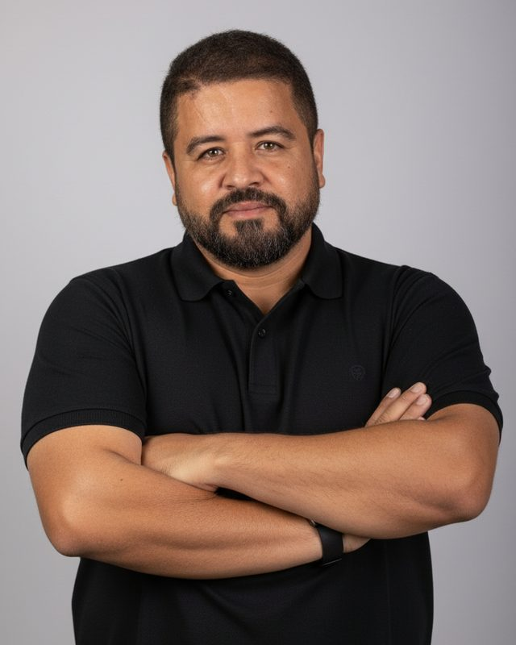

Alan Moraes

Sou Alan Moraes, bancário, professor e mentor para concursos. Fui aprovado e convocado em mais de 10 concursos, 6 deles bancários: 2 vezes no Banpará, 1 no Basa, 2 no Banco do Brasil e 1 na Caixa.
Já ajudei a transformar mais de 400 alunos em concursados. O Mais Concursados nasceu para reunir em um lugar só o que eu gostaria de ter tido quando comecei: editais organizados, método de estudo claro e orientação de quem já passou pelo processo.
Em números
10+
concursos com aprovação e convocação
6
deles bancários: Banpará (2x), Basa, BB (2x) e Caixa
400+
alunos transformados em concursados
O que você encontra aqui
- Um painel de editais abertos e previstos, com as fontes de cada informação.
- Artigos sobre método, rotina e conteúdo para concursos bancários.
- A mentoria Bancada, turmas fechadas para quem quer estudar com acompanhamento.
Você também me encontra no Instagram, em @prof.alanmoraes.